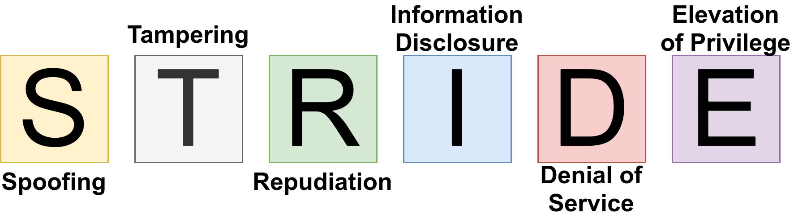

STRIDE is an acronym for:
- Spoofing: Impersonating someone else; e.g. email spoofing. A common example is the grandparent scam. Spoofing breaks Authenticity.
- Tampering: Modifying data or code; e.g. manipulating the data sent by the browser. A non-digital tampering attack is when you look at your children's yearly school report and they changed the grades. Tampering breaks Integrity.
- Repudiation: Claim you didn’t send an email / perform a transaction/edit that Wikipedia page. Repudiation breaks non-repudiability.
- Information Disclosure: A privacy breach or a data leak. Information Disclosure breaks Confidentiality.
- Denial of Service: e.g. uploading big files to a service; causing heavy computation; pinging the server to overload the network; ZIP bombs; A billion laughs. Denial of Service breaks availability.
- Elevation of privilege: e.g. SQL Injection. Elevation of privilege breaks authorization.